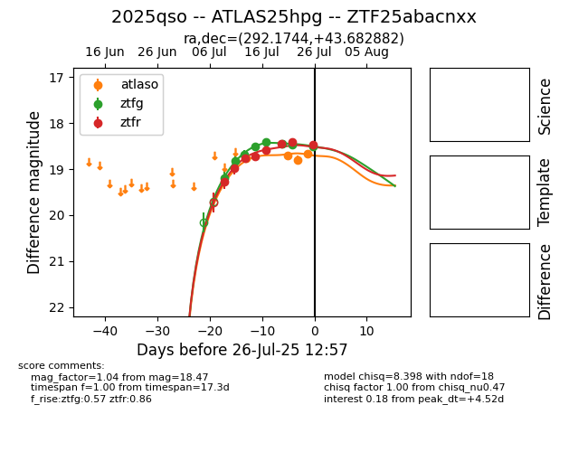

Target 2025qso at 2025-08-06 22:18, see:
FINK: fink-portal.org/2025qso
Lasair: lasair-ztf.lsst.ac.uk/objects/2025qso
ALeRCE: alerce.online/object/2025qso
TNS: wis-tns.org/object/2025qso
YSE: ziggy.ucolick.org/yse/transient_detail/2025qso
alt names
ZTF25abacnxx (ztf,fink)
2025qso (tns,yse)
ATLAS25hpg (atlas)
coordinates:
equatorial (ra, dec) = (292.1744,+43.68288)
galactic (l, b) = (76.0426,+12.16669)
photometry
last atlasc=18.60, atlaso=18.75, ztfg=19.11, ztfr=18.89
1 atlasc, 5 atlaso, 12 ztfg, 12 ztfr detections
